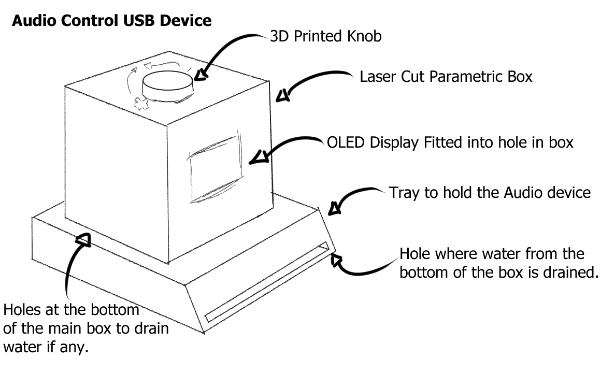
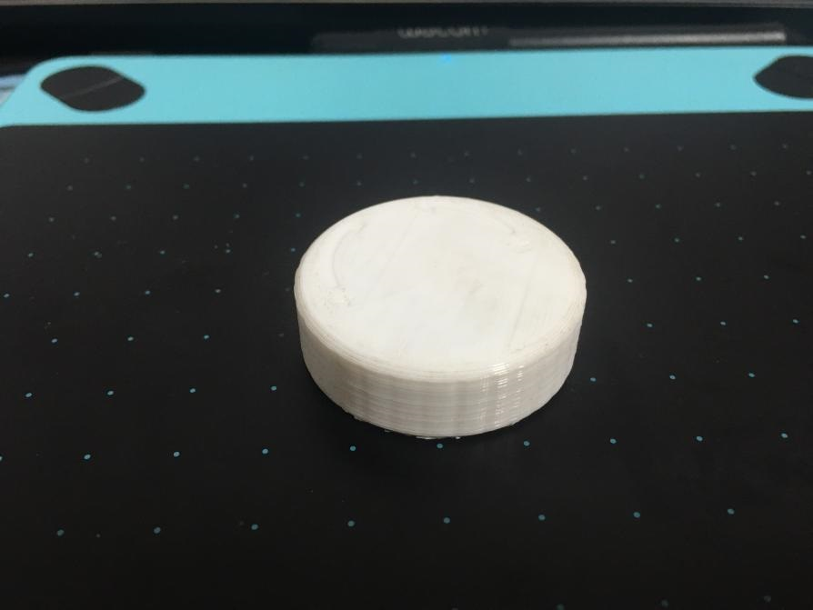
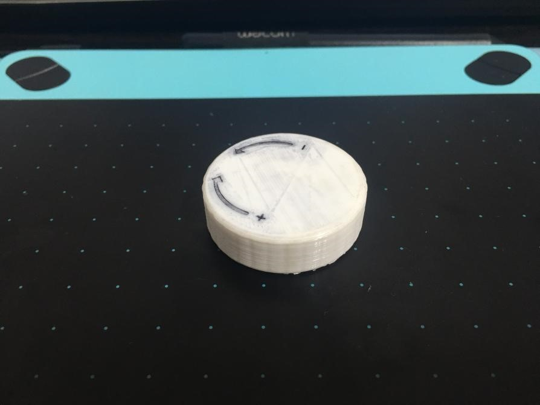
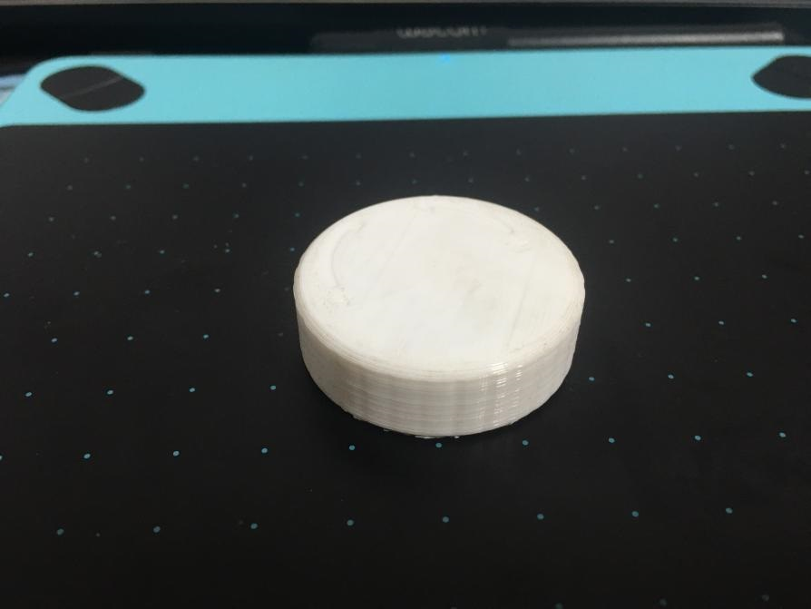
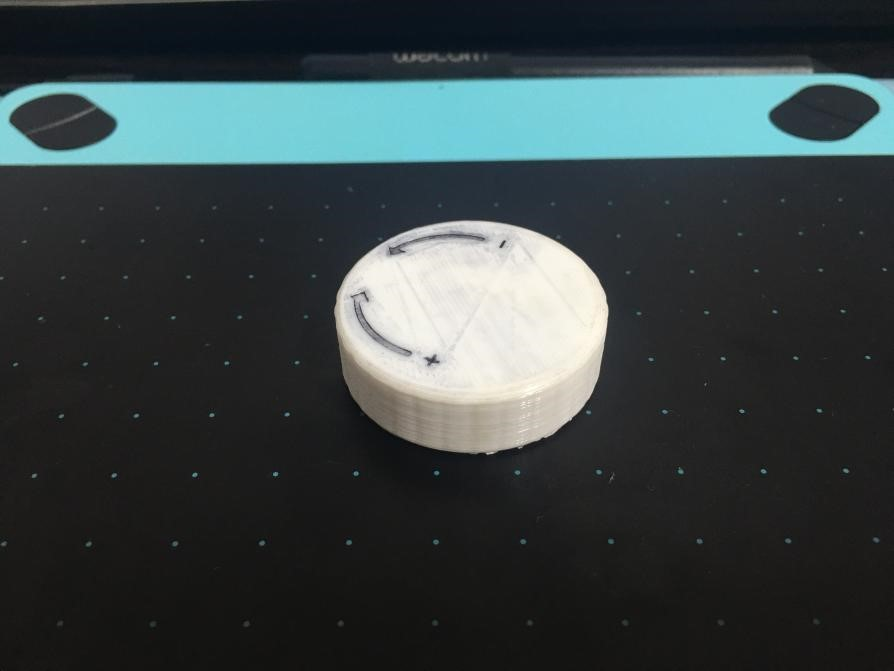

Final Project
The Final Project requires us to come up with an idea and work towards making a physical copy of it, using the various techniques we have learned such as:
- Documentation to record the documentation and record the progression of:
- Ideas - The ideas on what can be made and what purposes the design will serve
- Construction - The construction of the actual project should be documented as it progresses, showing the production of the various components and the assembly of all parts.
- How-do (?)
- Instruction Manual - A user's manual on how to operate the various functions of the project's design.
- CAD and/or Digital Graphic Components
- 2D Cutting and Engraving
- 3D Printed Parts
- Embedded control with a microcontroller with inputs and outputs
Tasklist
- Research possible ideas
- Research more details and look for existing designs that are similar or the same as my ideas. Status: Completed
- Produce Preliminary Sketches
- Preliminary Sketches should be produced for a more visual representation of the project idea. Status: Completed
- Produce Bill of Materials (BOM)
- A bill of materials is used to help identify a total list of items and components that are needed in the prodiction and construction of the project Status: Completed
- Check with lecturers on project scope
- Check with lecturers on the feasability and safety of the scoped project Status: Completed
- Designing CAD model and make any changes if needed.
- Start making or modifying any existing designs to make the needed changes to plan out the production of the final project. Status: Completed
- Cutting and Engraving of parts
- Laser cutting parts that are needed to be used for the final project, and the subsequent results and adjustments made to fix any issues. Status: Completed
- 3D Printed Parts
- 3D Print any parts that are needed, and make any changes neccessary to fix them. Status: Completed
- Embedded Control with the Microcontroller
- Code the functions of the circuit to recieve inputs, and the following outputs. Status: Completed
Bill of Materials
- Final Bill of Materials Collected
- This final list is created after simplifying the circuit as much as possible, removing unneccessary components, and changing the board to a Digispark ATTiny85 by choice of the lecturer. In this case, no other power aside from the board's USB connection to a host computer is needed as there are no physical output devices, cutting down on the components needed.
- 1x Digispark ATTiny85 Board
- The Digispark board will serve to collect input from the Rotary Encoder and adjust the volume on the connected computer respectively, and is powered by the USB connection to the computer.
- 1x Rotary Encoder
- The Rotary Encoder is used here as the primary input device.
- 10x Short Dupont Female to Female Jumper Wires
- The cables are used to make the needed connections in the circuit between the board and the rotary encoder.
- Data Transfer Micro USB Cable
- Used to transfer data and input between the board and the computer
- Additional Materials that are not electrical components:
- 3mm thickness plywood, used for lasercutting pieces to form the main housing of the circuit. 3d Printed Knob made for Rotary Encoder
- Bill of Materials V2
- This list is slightly edited after consulting with the lecturer about ways to go about assembly of the project.
- 1x Arduino UNO Board
- The Arduino UNO board is used in place of the Arduino Nano as it is functionally similar to the Nano and the UNO is given to us by default in our kit. This was later replaced by the Digispark.
- 1x Rotary Encoder
- The Rotary Encoder is used here as the primary input device.
- 1x DuPont terminal block pin header 2mm 2 row *5p needle splitter pin header
- This is a power bus that is meant to provide power to the OLED Display. However, it is later removed as the OLED Display is made redundant by the computer screen showing the sound changes in the form of visual feedback.
- 1x 128X64 I2C SSD1306 OLED display
- An OLED Display that was changed from the original due to availability of Fablab. This is later removed as it is made redundant by the computer's visual feedback of volume changes.
- 11x 10cm Male to female jumper wires
- Wires used to make connections between the Power Bus, UNO board, display, and rotary encoder. Later changed to Female Female cables due to the change to the use of a Digispark and the removal of the power bus and OLED Display.
- Additional Materials that are not electrical components:
- 3mm thickness plywood, used for lasercutting pieces to form the main housing of the circuit. 3d Printed Knob made for Rotary Encoder
- Bill of Materials V1
- This list is slightly edited after consulting with the lecturer about ways to go about assembly of the project.
- 1x Arduino UNO Board
- The Arduino UNO board is used in place of the Arduino Nano as it is functionally similar to the Nano and the UNO is given to us by default in our kit. This was later replaced by the Digispark.
- 1x Rotary Encoder
- The Rotary Encoder is used here as the primary input device.
- 1x DuPont terminal block pin header 2mm 2 row *5p needle splitter pin header
- This is a power bus that is meant to provide power to the OLED Display. However, it is later removed as the OLED Display is made redundant by the computer screen showing the sound changes in the form of visual feedback.
- 1x 128x32 I2C OLED display
- The original OLED display intended for use, but changed due to availability of Fablab. This is later removed as it is made redundant by the computer's visual feedback of volume changes.
- WS2812 5050 LED Ring 8-bit
- Used to show visual feedback of change in volume, but removed due to lack of availability and redunduncy.
- 11x 10cm Male to female jumper wires
- Wires used to make connections between the Power Bus, UNO board, display, and rotary encoder. Later changed to Female Female cables due to the change to the use of a Digispark and the removal of the power bus and OLED Display.
- Additional Materials that are not electrical components:
- 3mm thickness plywood, used for lasercutting pieces to form the main housing of the circuit. 1x 3d Printed Knob made for Rotary Encoder 4x M2 10mm Countersink screws for fastening components in place. 6x M2 5mm Screws for fastening components in place. 4x Silicon bumper 2x8mm for fastening components in place.
In preparation for this project, I've done some preliminary research on the ideas I had shortlisted, listed below, along with an evaluation on the feasability of each choice:
- Mood Lamp
- The first idea I had was to make a mood lamp / light based clock, with the light changing based on the time, as shown below.
 I had also found a similar project to the idea I had in theory, and it can be found here.
However, I rejected the idea for two reasons. The first was that I did not know how to program some of the functions, and I felt that it would be fairly redundant and not serve a practical purpose for most people,
as their functions can be replaced by other appliances such as mobile phones.
I had also found a similar project to the idea I had in theory, and it can be found here.
However, I rejected the idea for two reasons. The first was that I did not know how to program some of the functions, and I felt that it would be fairly redundant and not serve a practical purpose for most people,
as their functions can be replaced by other appliances such as mobile phones. - Useless Machine
- I had intended to make a useless machine, but I could not find any interesting designs that could accomplish or serve a practical use, hence I scrapped the idea and moved onto looking at interesting parts that I wanted to try working with. However, an example of what I had intended to do can be found here.
- USB Audio Control device
- I found an interesting design that I wanted to try, and found a design that mainly made use of a rotary encoder for all its inputs, managed by an Arduino Nano. It allows the user to switch and cycle through various programs to adjust their audio, with a visual indicator to the audio level using an OLED display. Below is a sketch.  The idea was heavily inspired by this project by Ruben Henares that uses a program called Maxmix, made for use with Arduino. The official website for its development can be found here. Due to my personal interest in the use of the rotary encoder, this is the first selection of projects I would like to do, followed by the mood lamp, and then the useless machine.
- I decided to remove small parts such as the screws and silicon bumpers, as I felt that they were unneccessary and the other parts could be secured in much better ways that used lesser materials, or materials that could be recycled for this purpose.
- I decided to remove the OLED ring as I felt that the visual feedback would not be needed as you would have the screen display for visual feedback, and the sound volume being changed as audial feedback.
- The OLED Display had to be changed due to a lack of availability of the original desired OLED.
- To make changes from the original design by Ruben Henares, I had wanted to make the microboard controller be the Arduino UNO, and make the design have a slot that accomodated both boards.
- I decided to add indicators on the knob for the user to have an easier time using it, so they would know which direction of turning the knob would give them what result.
- I decided to make holes in the base of the box to drain water and provide more air ventilation on the off chance that the parts could overheat if put in a closed box.
- I decided to remove the tray as it was unneccessary.
- I decided to add grooves on the knob to make it easier to hold as I realised that it might be hard to hold since it would be 3D Printed.
- I decided to make the main box laser cut, and parametric, so any of the sides could be removed and reassembled back easily.
- I realised that visual feedback would not be needed, as later versions of most operating systems show up with the audio information on screen if it is changed, and hence decided to remove the OLED display and power bus.
- The UNO was changed to a Digispark ATTiny85.
- I could no longer use the code from the original website I had wanted, and had to change the code.

 This was just plain flat plastic, which can be hard to grip for some people. Additionally, it is unclear of which direction of turning the knob does what, and any other additional features the project might have.
Hence, I decided to add some markings on top of the knob.
I started out with making a sketch of the indentations on the top, gauging them to be half the size of my finger, but decided that was too big. Hence, I shrunk the width of the indentations from 8mm to 2.5mm,
as I felt that if it was too big, it would be hard to tell what the indentation was with a touch of a finger. In hindsight, it should have been large, something like 5mm, as 2.5mm turned out to be too small.
But that is too late to change, so if anyone reads this website and decides to do something similar, do take note to make it large enough that your finger should cover it nicely. As for the actual creation of the indentation,
I started with a sketch on one side, creating the following sketch, creating the indentations on one side first with a line down the middle.
This was just plain flat plastic, which can be hard to grip for some people. Additionally, it is unclear of which direction of turning the knob does what, and any other additional features the project might have.
Hence, I decided to add some markings on top of the knob.
I started out with making a sketch of the indentations on the top, gauging them to be half the size of my finger, but decided that was too big. Hence, I shrunk the width of the indentations from 8mm to 2.5mm,
as I felt that if it was too big, it would be hard to tell what the indentation was with a touch of a finger. In hindsight, it should have been large, something like 5mm, as 2.5mm turned out to be too small.
But that is too late to change, so if anyone reads this website and decides to do something similar, do take note to make it large enough that your finger should cover it nicely. As for the actual creation of the indentation,
I started with a sketch on one side, creating the following sketch, creating the indentations on one side first with a line down the middle.
 With this done, I simply copied the indentations over and modified the plus to a minus symbol.
With this done, I simply copied the indentations over and modified the plus to a minus symbol.
 Subsequently, I cut the sketch to a depth of 0.2mm, thinking it would be pretty thick, but not enough that it would get water or any grime stuck inside. But in hindsight, it should have been made deeper.
Subsequently, I cut the sketch to a depth of 0.2mm, thinking it would be pretty thick, but not enough that it would get water or any grime stuck inside. But in hindsight, it should have been made deeper.
 After that, I filleted the edges to remove the sharp edges.
After that, I filleted the edges to remove the sharp edges.
 After the filleting of this, the indentation was done, and I moved onto the groove. I started mainly with drawing two circles to count outwards, before creating circles on the outer lines slightly overlapping with the edges of the knob.
After the filleting of this, the indentation was done, and I moved onto the groove. I started mainly with drawing two circles to count outwards, before creating circles on the outer lines slightly overlapping with the edges of the knob.
 With this done, I cut the circles downward for the grooves.
With this done, I cut the circles downward for the grooves.
 This resuts in the following knob, which was 3D Printed out.
This resuts in the following knob, which was 3D Printed out.

 Some problems with this was that the indentations are too smooth, and the plus and minus is too small and smooth. However, the grooves was fine and worked as intended.

To fix this, I used a pen to mark out the indentations.

Some problems with this was that the indentations are too smooth, and the plus and minus is too small and smooth. However, the grooves was fine and worked as intended.

To fix this, I used a pen to mark out the indentations.
